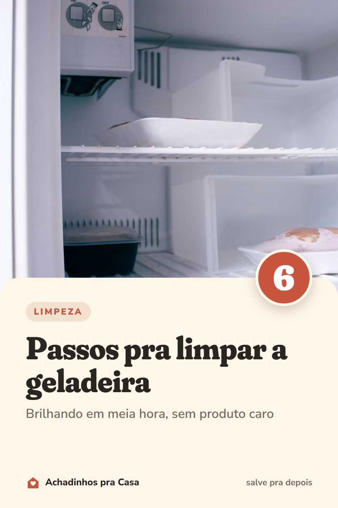

Limpeza
Como limpar a geladeira em 6 passos
Brilhando em meia hora, sem produto caro.
- Desligue e esvazieTire a geladeira da tomada, tire tudo de dentro e aproveite para jogar fora o que venceu ou estragou.
- Caixa térmica para os perecíveisCarnes, laticínios e congelados esperam na caixa térmica enquanto você limpa.
- Prateleiras e gavetas na piaLave com água morna e detergente neutro. Água quente, nunca: o vidro gelado pode trincar.
- Bicarbonato por dentroUma colher de sopa de bicarbonato em um litro de água morna limpa as paredes e ajuda a tirar o cheiro.
- Seque antes de ligarPasse um pano seco em tudo. A umidade que fica vira gelo e mofo.
- Guarde já organizandoO que vence primeiro vai na frente, e cada tipo de alimento volta para a sua prateleira.